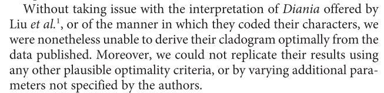

Reproducible research
Concepts and tools
Joona Lehtomäki
Content
1. Background
2. Concepts
3. Tools: RStudio and Git
Slide 2
- Point 1
- Point 2
- Point 3
Open science
"Opening up access to the data and software, not just the final publication, is one of goals of the open science movement"
(Ram, 2013)
- Open access
- Open data
- Open notebook science
- Open source software

Reproducibility
- With replication, independent investigators address a scientific hypothesis and build up evidence for or against it (Peng, 2011)
- Allows others to build upon existing work and use it to test new ideas and develop methods (Ram, 2013)
- While currently there is unilateral emphasis on "first" discoveries, there should be as much emphasis on replication of discoveries (Ioannidis, 2005)

Wolkovich et al. (2012)

Peng 2011


Mounce and Willis (2011)

van Noorden 2011

Sirkiä et al. 2012
Some R-code
# Quick summary
library(ggplot2)
summary(cars)
## speed dist
## Min. : 4.0 Min. : 2
## 1st Qu.:12.0 1st Qu.: 26
## Median :15.0 Median : 36
## Mean :15.4 Mean : 43
## 3rd Qu.:19.0 3rd Qu.: 56
## Max. :25.0 Max. :120
# Quick plot of the data
qplot(speed, dist, data = cars) + geom_smooth()


Git: steep learning curve?

Reference:
[1] Ram K. (2013): Git can facilitate greater reproducibility and increased transparency in science. Source Code for Biology and Medicine [Internet]. [cited 2013 Mar 1];8(1):7. Available from: http://www.scfbm.org/content/8/1/7.